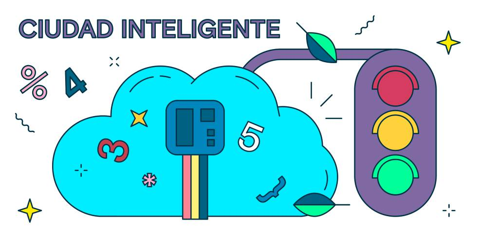

Cinco sitios por donde pueden colarse los 'hackers' y cómo solucionarlo
Estos son los remedios para cazar a los ciberdelincuentes antes de que accedan a nuestros dispositivos conectados para robar
información
J.G./ J.P.| ANA CUNA (ILUSTRACIONES)
1 OCT 2019 - 09:41 CEST
Para algunos, el mayor de los tesoros puede estar sumergido en una pecera. Si no, que le pregunten al casino que comprometió los datos de miles de clientes al instalar un termómetro inteligente en uno de sus acuarios. Ademáss de regular la temperatura del agua, este dispositivo se convirtió en la puerta de entrada de una banda de hackers.
Aprovechando la conexión a internet del termómetro, los ciberdelincuentes se colaron en la red informática del casino y comenzaron a extraer información confidencial de los jugadores. Aunque el ataque se frenó a tiempo, puso de relevancia la vulnerabilidad de los objetos que "hablan" entre sí gracias a la tecnología IoT (siglas en inglés de internet de las cosas), cada vez más presente en nuestras vidas. En el caso de las empresas, los objetos con sensores ya se emplean para optimizar flotas de vehÃculos, mejorar la eficiencia energética de los edificios, automatizar procesos industriales, controlar la afluencia en tiendas… “El auténtico ‘boom’ del IoT está en los procesos de negocio, donde encontramos dispositivos conectados permanentemente, lo que obliga a controlar su seguridad en todo momento para solventar cualquier vulnerabilidad y anticiparse a un posible ataqueâ€, comenta AgustÃín Cárdenas, director de Transformación de Negocio de Telefónica Empresas. Según este experto, su compañÃa monitoriza más de 14 millones de sensores conectados a través de redes móviles, para garantizar la continuidad de los negocios que usan estos dispositivos. "Detectamos de forma proactiva alarmas del funcionamiento de los sensores, de la información que envÃan o de cualquier situación anómala para anticiparnos a posibles incidentes", señala.
Todo elemento conectado a una red puede ser el blanco de un ciberataque. De hecho, ya existe un tipo de amenaza, bautizada como “ataque de marionetas†(puppet attack), que aprovecha la vulnerabilidad de los objetos del internet de las cosas para infiltrarse. Si tenemos en cuenta que el año que viene habrá 21.200 millones de dispositivos conectados, según IoT Analytics, la protección del IoT es una tarea crucial, especialmente en estos cinco escenarios.
Una investigación de la IT University de Copenhague demostró que a través de los sensores de movimiento de un reloj inteligente se pueden descifrar las contraseñas que está introduciendo en un teclado el usuario que lleva puesto ese accesorio.
Amenazas:
- -'Hackeo'. Los ciberdelincuentes pueden acceder a nuestros wearables (ropa y accesorios inteligentes) y robar la información que guardamos en ellos.
- -'Malware'. Instalación desde una descarga de internet de un programa malicioso que piratea los dispositivos.
- -'Phishing'. A través de apps o correos electrónicos aparentemente oficiales, se nos solicitan datos personales con los que comercian posteriormente.
Soluciones:
- -Actualización. Mantener nuestros dispositivos siempre actualizados, con las últimas versiones de software disponible.
- -Copias de seguridad. Permite disponer de todos nuestros datos desde la última vez que los guardamos.
- -MSSP. Si los desarrolladores del dispositivo no pueden hacerse cargo de su seguridad, lo ideal es que contraten los servicios de un MSSP, siglas en inglés de proveedor de seguridad gestionada.
Hace dos años, una mujer holandesa denunció que la habían espiado a través de una cámara que instaló en su domicilio para controlar a su cachorro con el móvil. Se dio cuenta del hackeo cuando dejó el teléfono en la mesa y la cámara se movía sin que ella diera ninguna orden a través de la app.
Amenazas:
- -'Hackeo'. Los ciberdelincuentes acceden a los sistemas inteligentes de nuestras casas para controlarlos en remoto.
- -Corte eléctrico. La caÃda del sistema eléctrico pone en jaque a cualquier sistema conectado a la red. SerÃa conveniente contar con algún mecanismo de electricidad de emergencia.
- -'Ransomware'. Programa dañino que restringe el acceso a partes del sistema operativo que controla la casa conectada. Para recuperar el control, se exige un rescate al usuario.
Soluciones:
- -Algoritmos. Mediante la programación del sistema inteligente, podemos detectar si los sensores de nuestra casa se comportan erróneamente y verificar si un ciberdelincuente quiere acceder al hogar.
- -Contraseñas. Fijar contraseñas complejas y cambiar las que vienen de serie.
- -Antivirus. Instalar un antivirus que detecte, pare y elimine cualquier ataque en la red a través de programas maliciosos.
Uno de los casos de hackeos más sonados fue el de dos estadounidenses expertos en seguridad que accedieron desde sus ordenadores a un Jeep Cherokee. Consiguieron manipular el aire acondicionado, la radio, el limpiaparabrisas y hasta detener el motor del vehÃculo.
Amenazas:
- -'Hackeo'. Alguien puede acceder a los sistemas inteligentes de nuestros vehÃculos autónomos y controlarlos sin que podamos hacer nada.
- -Desconexión. Una caÃda del sistema satelital dejarÃa al coche autónomo sin capacidad de guÃa a través de una navegación por GPS.
- -Intromisión en comunicaciones. Un cibercriminal puede interceptar las comunicaciones entre el coche y otros dispositivos y trastocar el normal funcionamiento del vehÃculo.
Soluciones:
- -La nube. Migrar, en la medida de lo posible, todo el software del coche y los sistemas operativos a la nube para recuperar los datos ante posibles ataques externos.
- -Cifrado de datos. Empleamos un algoritmo para transformar un mensaje, sin atender a su estructura lingüÃstica o significado, de tal forma que sea incomprensible para quien no disponga de la clave secreta del algoritmo.
- -Identificación del dispositivo. Si el vehÃculo cuenta con su propio identificador, igualmente que los sensores que incorpore, será posible aislarlos en caso de sufrir cualquier ataque.
Kaspersky Lab detectó ataques por software malicioso en más del 40% de los equipos ICS (Sistemas de Control Industrial, en sus siglas en inglés) protegidos por sus soluciones en 2018. Los ciberataques contra estos equipos se consideran una amenaza altamente peligrosa por las importantes pérdidas de información y por el tiempo de inactividad del sistema.
Amenazas:
- -Ataque 'botnets'. Se trata de una red de bots, controlada por un hacker, que propaga automáticamente malware o todo tipo de software pernicioso para los dispositivos.
- -'Hackeo'. Alguien ajeno a la maquinaria puede colarse en sus sistemas inteligentes y darle órdenes en remoto.
- -'Ransomware'. Se encripta parte de los archivos de las máquinas y se exige un rescate para volver a acceder a ellos. Esto puede alterar los ritmos de producción y las rutas de distribución.
Soluciones:
- -Inteligencia artificial. Incorporar inteligencia artificial en la maquinaria para que aprenda de las amenazas detectadas y, de esta forma, predecir y mejorar sus sistemas de defensa autónomamente.
- -La nube. Subir a una plataforma cloud el software de las máquinas y los sistemas operativos para recuperar la información ante posibles ataques.
- -Cifrado de datos. Empleamos un algoritmo para transformar un mensaje, sin atender a su estructura lingüÃstica o significado, de tal forma que sea incomprensible para quien no disponga de una clave secreta.

En 2017, la ciudad estadounidense de Dallas sufrió un ataque contra sus sistemas de emergencia. En plena madrugada, las más de 150 sirenas, pensadas para alertar sobre tormentas o tornados, comenzaron a sonar sin parar. Las autoridades determinaron que todo partió de un hackeo informático contra la red inteligente de la localidad.
Amenazas:
- -'Hackeo'. Los sistemas inteligentes de una ciudad entera pueden ser atacados con diferentes fines.
- -CaÃda eléctrica. La caÃda del sistema eléctrico pone en jaque a cualquier sistema conectado a la red, y más en el caso de las ciudades. SerÃa conveniente contar con algún mecanismo de electricidad de emergencia.
- -'Malware'. Los ciberdelincuentes pueden optar por instalar externamente un programa malicioso con el que piratear los dispositivos de la ciudad, desde el alumbrado hasta las cámaras de tráfico.
Soluciones:
- -AMI. Infraestructuras de medición avanzada, en sus siglas en inglés. Redes de comunicaciones y sistemas de gestión que permiten la comunicación bidireccional entre las distribuidoras y los clientes finales.
- -Integración de sistemas. En vez de contar con sistemas operativos muy diferentes entre los distintos IoT de la ciudad, optar por una integración que centralice la gestión.
- -Cifrado de datos. Se usa un algoritmo para codificar un mensaje, de tal forma que sea incomprensible para quien no disponga de una clave secreta.
En definitiva, los malos no descansan pero tenemos la ventaja de que los métodos de protección han mejorado sustancialmente. Uno de los más interesantes lo constituyen los denominados honey pots, usados como señuelo para detectar ataques. "Expones directa y abiertamente dispositivos con IoT en la red para que los ciberdelincuentes piquen. Es una forma muy sencilla de encontrar vulnerabilidades y sus posibles remedios", señala Manuel López, responsable de soluciones IoT de Telefónica Empresas. Aparte de que capturan a los hackers en plena acción, los honey pots son una herramienta de aprendizaje porque con la información obtenida pueden preverse con mayor facilidad otros indicios de que alguien ajeno está preparando un ataque a todo lo que tenemos conectado entre sí, según López.